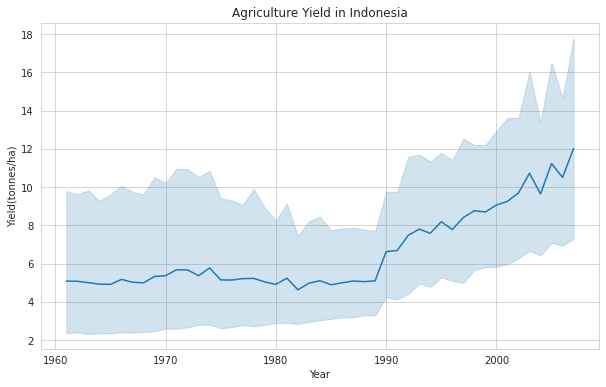

Exploring FAO Crops
Global Agricultural Data
Go to Project Repository
Summary
This is project aims to understand agricultural production in the world in 1961-2007 period and conduct simple forecast on Indonesia Sugarcane production.
The project repository is accessible from this link.
Data Description
The data is retrieved from Global Food & Agriculture Statistics from United Nations Food and Agriculture Organization (UN FAO). This particular project is only utilizing one dataset of FAO Crops Data.
Data consist of information of 10 agriculture production elements in the world, each region, continent, and recorded countries. The analysis conducted in this project only includes these elements: (1) Harvest Area (hectares), (2) Production Quantity (tonnes), and Yield (tonnes/hectare).
Data Exploration
The World Agriculture 1961-2007
Harvest Area and Production Trend is Increasing. Yield experienced sudden drops in early 1990s.
World Agricultural Harvest Area
Increasing trend of global harvest area
The trend shows that agriculture land that provides production globally is considerably stagnant and might even show trend of increasing. Despite the issue on agriculture land conversion, it seems that it does not affect the global trend or might not happen in 1961-2007 period.
The world largest harvest area is dominated by India and China, and then USSR until its fall in early 1990s.
World Agricultural Production
Total agricultural harvest production is increasing globally
As expected of the increasing food demand, world agriculture production is increasing. This piqued the interest of what crops types are increasing dominantly.

Top producers of agricultural harvest is still dominated by similar countries to harvest area. However, it is interesting to see that some European countries such as France, Germany, and Poland is included in the top producers list despite smaller harvest area.
World Agricultural Yield

Global yield experienced increase until late 1980s and drops drastically until early 1990s, currently trying to climb up again
Yield (tonnes/ha) or productivity experienced sudden drops globally in early 1990s. Cause to this phenomenon is still under research.
Top agricultural yield are owned by mostly European countries. There are extreme yield fluctuation in Netherlands which has the same pattern as the world yield fluctuation. It is guessed that the world fluctuation is caused by Netherlands data. The cause is still unknown.
The Indonesia Agriculture 1961-2007
Harvest area, production, and yield in Indonesia is increasing
Indonesia Agricultural Harvest Area
Harvest area trend is increasing slowly
Crops with largest harvest area are cereals, rice paddy, oil plants, coconut, coarse grain (maize), natural rubber, tubers, and cassava
Indonesia Agricultural Production
Agriculture production in Indonesia have a positive trend
Production quantity size is still dominated by staple foods and oil plants with difference of sugarcane domination compared to harvest area data
Indonesia Agricultural Yield
Agricultural yield in Indonesia had a jump in late 1980s and continue to have increasing trend
Yield value was once dominated by sugarcane but decreasing due to the dying down of sugarcane boom. Now it is dominated by mushrooms, papayas, and pineapples